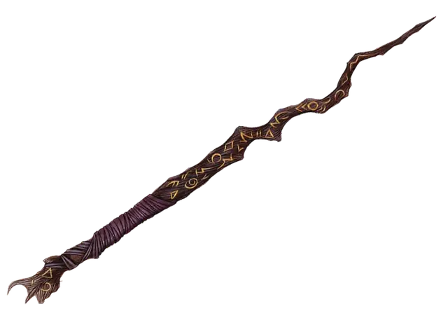

Волшебная палочка боевого мага +1, +2, +3
Wand of the War Mage, +1, +2, or +3
Волшебная палочка, редкость варьируется (+1 Необычная, +2 Редкая, +3 Очень редкая, требуется настройка заклинателем)

Пока вы держите эту волшебную палочку, вы обладаете бонусом к броскам атаки заклинаниями. Бонус зависит от редкости этой палочки. Кроме того, когда вы совершаете бросок атаки заклинанием, вы игнорируете Укрытие наполовину.